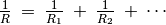
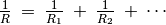

Measuring Resistance parallel combination¶
Objective
For parallel combination of resistors, this relation exists between
the effective resistance  and the components:

and the components:


Procedure for two resistors
- Connect both resistors between SEN and any Ground terminal
- Observe the value shown on the right side panel